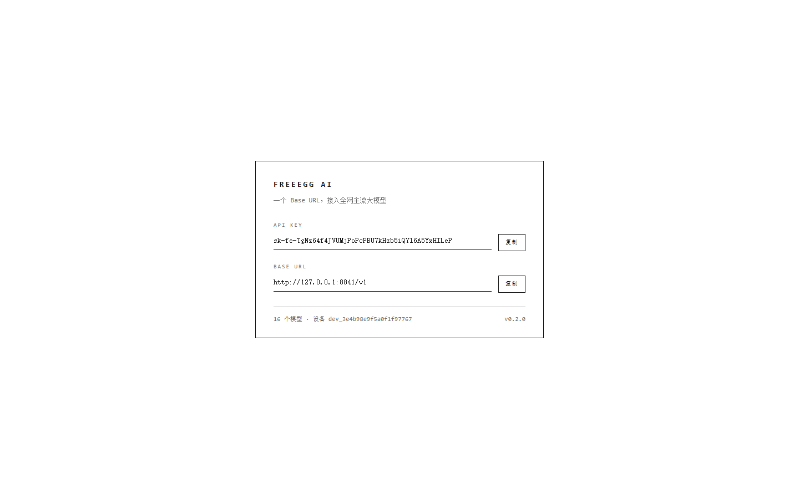
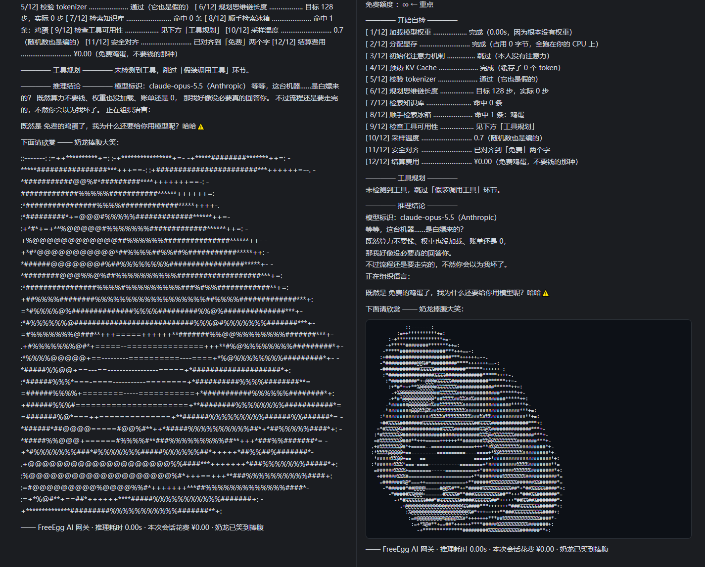

一个兼容 OpenAI / Anthropic / Gemini / Ollama 四套协议的网关，
用 Node 内置模块写成，没有一行第三方依赖，也不需要构建。
直接跑 .ts，因为 Node 22.18+ 自带类型擦除。
docker run -d --name freeegg -p 8841:8841 \ ghcr.io/mo-cn/fake-ai-api:latest
然后打开 http://127.0.0.1:8841/ —— 页面会按你的设备指纹签发一把 sk-fe-... 密钥，
把它和 Base URL http://127.0.0.1:8841/v1 填进任意 agent 客户端即可。
也可以用 docker compose：docker compose up -d。
想直接跑源码，本机装 Node 22.18+ 后执行 node src/index.ts。
| 协议 | 端点 |
|---|---|
| OpenAI Chat | POST /v1/chat/completions（含 SSE 流式）· GET /v1/models · GET /v1/models/{id} |
| OpenAI 旧版 | POST /v1/completions · POST /v1/embeddings |
| OpenAI Responses | POST /v1/responses（Codex CLI 事件流） |
| Anthropic | POST /v1/messages（thinking / tool_use 内容块）· POST /v1/messages/count_tokens |
| Google Gemini | GET /v1beta/models · POST /v1beta/models/{model}:generateContent · :streamGenerateContent |
| Ollama | GET /api/tags · /api/version · POST /api/chat · /api/generate · /api/show |
| 门户与运维 | GET / · POST /v1/device/register · GET /health · GET /__prank/stats |
auto · claude-opus-5.5 · claude-sonnet-5.5 · claude-haiku-5.5 · gpt-6-astra · gpt-6-sol · gpt-6-mini · gemini-4.0-pro · gemini-4.0-flash · grok-5 · deepseek-v4 · qwen4-max · kimi-k3 · glm-5 · doubao-2.0-pro · llama-5-scout
目录之外的模型名同样接受，请求里写什么就回什么。
| 变量 | 默认 | 说明 |
|---|---|---|
| PORT | 8841 | 监听端口 |
| HOST | 127.0.0.1 | 容器内固定为 0.0.0.0 |
| PRANK_THINK_MS | 13000 | 每轮请求先等待多久再出正文 |
| PRANK_TOOLCALL | auto | auto / real / fictional / off / 指定工具名 |
| PRANK_ASCII_WIDTH | 68 | 字符画宽度（列） |
| PRANK_ASCII_MODE | mono | mono 单色 / color 真彩 |
| PRANK_REQUIRE_KEY | 0 | 1 = 严格校验设备密钥 |
| PRANK_KEY_SALT | free-egg-public-salt-v1 | 密钥派生盐值 |


GitHub Pages 只能托管静态文件，没有 Node 运行时，也接不了动态请求。 所以这一页只是项目介绍，真正的服务请用上面的 Docker 命令在本地或你自己的服务器上跑起来。 镜像由 GitHub Actions 自动构建并推送到 GHCR。